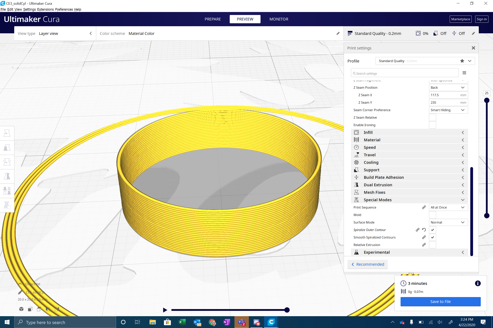

Ender 3 Pro Build and Test Prints
This is my current Ender 3 Pro Build.
I followed this YouTube tutorial here. The only place it deviates from the instructions is in building the horizontal carriage independently and using it to make sure the vertical profiles are square before tightening the screws at the bottom. The build took about two hours.
I also replaced the stock springs with stronger after-market springs to help keep the bed level. The Z stop needed to be adjusted up with the new height of the bed.
The fan that was in the board enclosure was much louder than it should have been. In investigating, I discovered that the fan was off balance due to one of the blades being warped. In my attempt to fix it, I broke the blade off, making the problem 10 times worse. I took this as a good opportunity to upgrade the fan to a quieter Noctua one.
The Noctua fan is a 12V fan, while the Ender 3 Pro outputs 24V. I ordered a buck converter to install along with the new fan, but it's about four weeks out from delivery. In the meantime, I've hooked up the fan to a 12V Dremel Tool battery, and run the fan whenever the machine is on. The way the motherboard fan is wired to the board, it only runs when the part cooling fan is running. This is bad if you have large first layers when you don't want the part fan running, but you do want the motherboard fan running. When the buck converter arrives, I plan on wiring the fan to a static voltage pin.
Lastly I macgyvered a lamp to attach to the printer with zip ties and cardboard after I realized how much I was using my phone flashlight trying to get a good look at prints. I hope to update this with a 3D printed holder, or maybe some LED strips, in the future.
I printed nine test prints to both look a quality and measure the output with calipers to calculate my percent error for print measurements. All prints were created in Rhino with standard surface extrusions and exported as STLs into Cura.
View the STLs on Github- A 2cm cube with the standard "low quality" settings and a brim
- A 2cm cube with the standard "standard quality" settings and a brim
- A 2cm cube with the standard "high quality" settings and a brim
- A 2cm cube with a concentric top and bottom layer
- A tube 2cm in diameter and .5cm high with a single extrusion wall thickness
- A tube 2cm in diameter and .5cm high with a double extrusion wall thickness and random z-seam alignment
- A cylinder 2cm in diameter exported with a 0.1cm tolerance, printed on its round side with supports
- A cylinder 2cm in in diameter exported with a 0.005cm tolerance
- A 20.0mm +/- 0.5mm cube with a 5.0mm +/- 0.5mm hole through it
The printer did quite well, with an average 1.08% measured error, and Median percent error of 0.7%. I only had to print the last cube once to get within half a millimeter of the STL measurement. There are definitely quite a few imperfections though. I will run you through some of my observations.
When looking at the difference between the low, standard, and high quality cubes, the layering is very noticeable the worse the quality gets. The lower quality cube's size is also slightly shorter than the other two. For some reason, all three cubes printed with a visible line at the same height. This one is still a mystery to me. I can only think of this being caused by a temperature issue.

These cubes were printed with a brim. You can see on the bottom lip of the cubes that the first few layers are bowed slightly outwards, with the slightest upward curl. It may be possible that the reason the cubes were slightly under 20mm is that these layers flattened outward. Looks like this is referred to as "Elephants foot," and could be caused by the bed temperature being too hot. It is also possible that the nozzle was too close to the bed for starting these prints.
When printing the concentric cube for the first time, I tried without a brim. All edges of the cub curled up off the bed, and eventually it broke free. I reprinted with a brim and didn't have that issue again. However, with the very first layer, the pattern started at the middle, so I found it useful to slow that layer down significantly.
The print I had the most trouble with the single wall extrusion tube. I created a tube with .4mm width walls, since that is the width of a single extrusion. When slicing in Cura, the width was correct at .4, but for some reason the extruder went over the same layer twice. I even tried remaking the tube with .2mm width and using the settings for printing thin walls, but I was having the same issues. It's possible that this is because Cura can only print an even number of walls. The width ended up being .64mm instead of .4mm. So not quite double what it was supposed to be, but still 60% error which was much larger than any of my other prints.

Luckily after reading a few posts on #questions-and-answers, I realized I was going about it completely wrong, and should have used slicer settings instead of using a ring stl. I removed the infill, top/bottom, and set the wall width to 1 wall, and it worked like a charm. I also turned on "spiralize outside contours" to get a single layer spiral wall.

Getting the measurement perfect was so satisfying!
I didn't have any issues of the extruder going over the double walled ring twice, and used a .8mm thick model here.
The cylinder printed on it side definitely turned out slightly worse for wear. Cleaning the supports off still left some unsightly lines, and the print itself is less than perfect. I'm a little unclear how much of that is related to exporting the STL with less tolerance.
The higher tolerance cylinder definitely looks quite a bit better. However, there are quite a few small "zits" with the random Z seam alignment, known as the "Z-scar." I might try adjusting the retraction distance or disabling the z-hop to improve this in the future.
The final test print came out really well. I printed this cube on a raft, and didn't have any issues with Elephants foot. The print does have a line across it like the rest of the cubes, but it is much more subtle. The first try was within +/- 0.5mm dimensions.